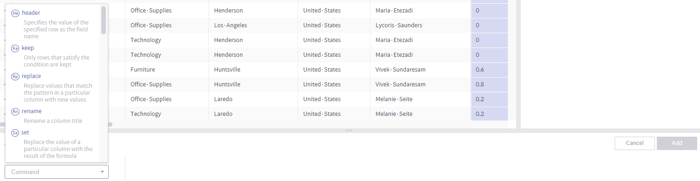
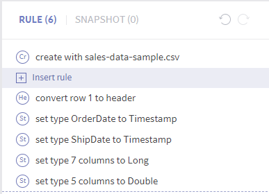

Edit rules¶
The key task in data preparation is to create rules for data transformation (usually refinement). The transformation rules and input/output specifications are combined to be applied to actual data or other similar data, or scheduling is performed for such tasks.
Below are instructions on creating rules, checking the results, and modifying or deleting rules.
The Edit Rules page consists of the following:

Column type, name, and menu button
Menu for simple rule creation
Rule list and insert button (appears when cursor is placed in between rules)
Enabled when undo and redo are available
Panel to enter rule details
Column value distribution, distinct count, type mismatch, null value, etc.
Create a rule¶
Using the column header menu¶
Select a target column by clicking the column header.
Press the function key to select multiple columns.
Depending on your OS, click while holding the ^ or ⌘ key to select/deselect a column (toggle).
Click while holding the Shift key to select a range.

Click the
 icon in the header of a selected column to open the header menu, and select a transformation command.
icon in the header of a selected column to open the header menu, and select a transformation command.Among the commands, drop and settype are performed upon clicking.

To add details, fill out the command input panel below, and click the Add button.

Some commands can be performed by selecting a distribution bar.
Click a distribution bar to filter the data based on the selected range (toggle).
Click the type mismatch or null value graph to set conditions for those values.

Using the command input panel¶
Select a transformation rule (command) in the command input panel.
Add details as needed, and click the Add button.
Target columns can be selected using the input panel. You can also designate a column by clicking the column header.

Inserting into a rule list¶
In the list of rules of the right, place the cursor over the boundary where you wish to insert a new rule. The + Insert rule button appears. Press this button.
Select a transformation rule (command) in the command input panel. Add details as needed, and click the Add button.
When a rule is inserted in this manner, all subsequent rules are affected.
Rules that cannot be normally executed are displayed in red. In this case, they will revert to the results obtained in the previous step.
Edit a created rule¶
Editing a rule¶
In the list of rules on the right, place the cursor over the rule to be edited. The
 button appears. Press this button.
button appears. Press this button.
Edit the rule in the command input panel and press the Done button.
When a rule is edited in this manner, all subsequent rules are affected.

Deleting a rule¶
In the list of rules on the right, place the cursor over the rule to be deleted. The  button appears. Press this button.
button appears. Press this button.
When a rule is deleted in this manner, all subsequent rules are affected.

Undo and redo¶
On the upper right of the rule list are icons to perform undo and redo.

To revert to a state before executing a command, press the  button.
button.
The dataset reverts to the state before the last transformation (including rule creation, modification, and deletion).
All rules that were affected also revert to their previous states.
To perform the same command again, press the  button.
button.
Pressing
is faster than following the steps to perform the same command again. It is because the transformation results are stored in memory.